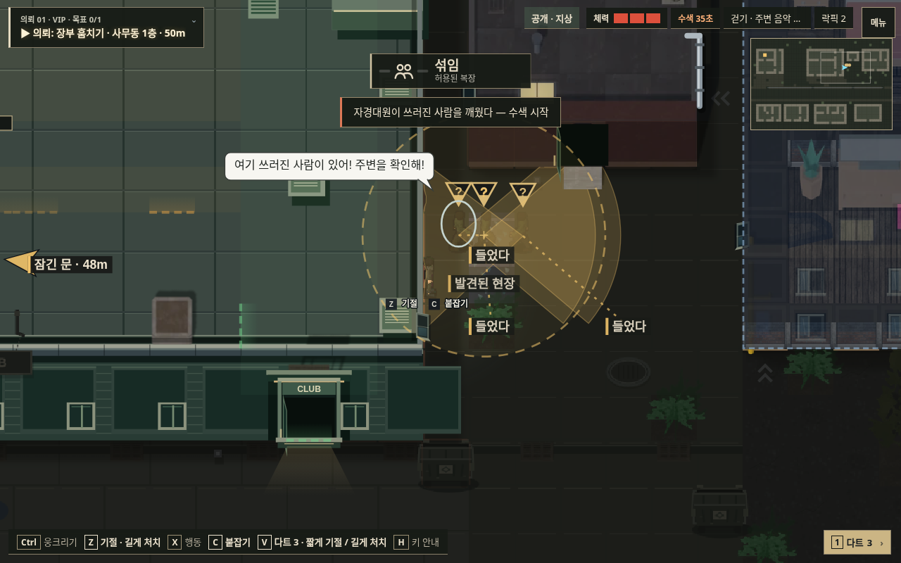
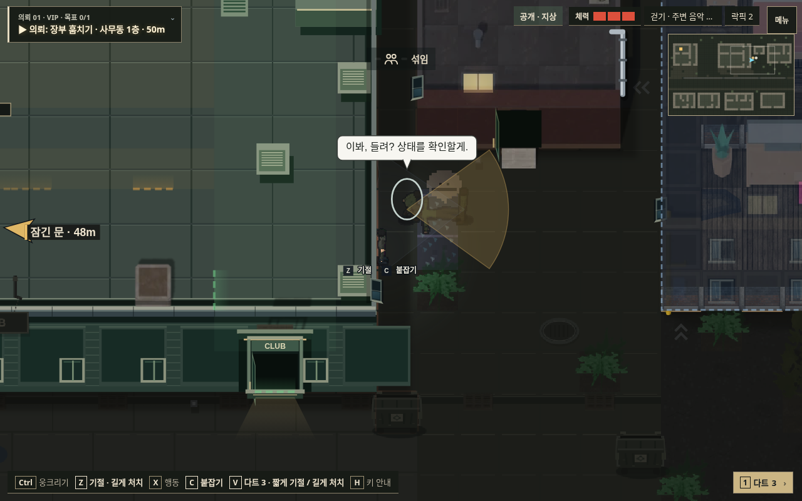
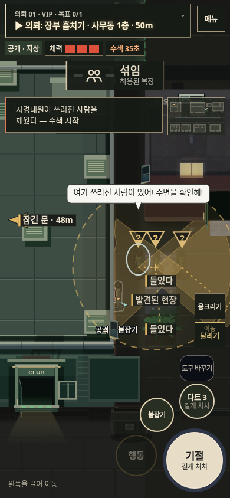
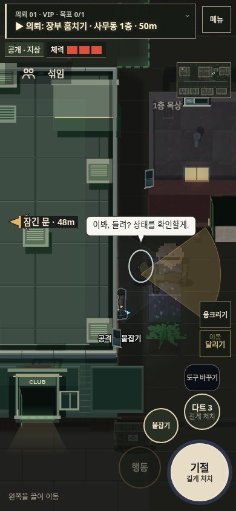

v140 · 본 것과 전달받은 것을 구분하는 AI
같은 실제 지형에 인물을 배치한 통제 장면입니다. 스크린샷은 브라우저에서 직접 캡처했습니다. 자연 플레이 난이도나 실물 기기 성능의 증거는 아닙니다.
게임 실행 · 레퍼런스와 적용 근거
- 목격자만 복장을 기억하고 무전 완료 후 다른 경비에게 전달
- 벽·층·높이·거리를 고려한 현장 보고
- 상태를 확인하는 경비 한 명과 주변을 경계하는 동료
- 뒤에서 기절한 피해자는 범인의 인상착의를 모름
PC · 동료 확인

v139 · 닿자마자 깨우고 주변 경비도 수색
v140 · 먼저 상태 확인, 다른 한 명은 주변 경계터치 화면 · 같은 장면

v139
v140PC AI 검사 · 터치 AI 검사 · 장면 상태 · 배포 확인